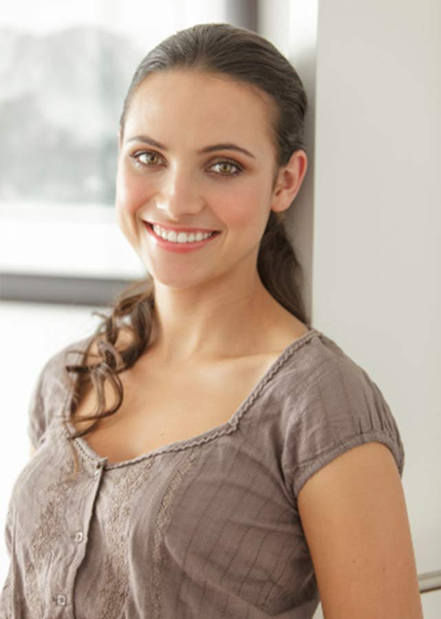

玫琳凯艾施女士说过，人们根据你的外表来衡量你，不管你在销售产品、申请工作或竞争晋级方面都是如此。人们不但会根据你的打扮衡量你，而且会根据你表现出的自信度来衡量你。
在我们的生活中确实如此，每一分每一秒我们都透过眼睛来看这个世界，我们的大脑也透过眼睛来了解和分析我们所看到的事物。
想象一下，迎面走来一个人，请问你是先看到他的哪一个部分呢？眼睛、头发、身材还是穿着？不论是发型长相或整体的感觉，我想大多数人的答案应该都是先看到对方的外表。总之，你绝不会回答说是先看到他的内涵，或是他手提包里装的那本书吧！

这说明了一件事，人的外表确实比他的内在更容易被发现，你会根据看到的印象决定是否跟他交谈。所以，要让别人在最短的时间内对你留下好印象，实在没有比好好打造自己的形象来得更重要了！
要成为百变女王，首先要先了解自己哦～一起来做个测试吧！
自我形象诊断：检视过去的我
选A：3分 选B：2分 选C：1分
1.你是什么时候开始使用化妆品的？
A.上学时
B.初入职场
C.脸上开始出现岁月的痕迹时
2.每季都会给自己购置新衣服吗？
A.当然了，我身上必须是流行的服饰
B.适当购置
C.不一定
3.每次买了新衣服后会？
A.搭配自己衣橱里的其他衣服，并试穿
B.放在床上搭配自己已有的衣服
C.放在衣橱里就好
4.路过有镜子的地方你会？
A.停下来整理头发，检查妆容
B.路过时顺便看一眼
C.又不是家里的镜子，不好意思看
5.何时开始做特别脸部护理的？
A.20-30岁
B.30-40岁
C.还没享受过
6.你是否注意自己的笑容？
A.随时保持微笑
B.看心情
C.没有考虑或注意过
7.你会整理好头发再出门吗?
A.一定要自己满意才出门,哪怕出去丢垃圾
B.要稍做修饰
C.弄整齐就好
8.你的坐姿是？
A.挺直坐好，还要注意手腿摆放
B.挺直就好了
C.坐着舒服就好
9.是不是随身携带化妆包？
A.补妆用品一应俱全
B.有时候带
C.没这个习惯
10.你是否阅读时尚杂志？
A.每期必读
B.有机会就看
C.没怎么看过
测试结果如下：
15分以下
要想成为真正的美女需要加油哦！最快最科学的方法就是学习个人形象管理，美丽的变化会像化蝶一样。经过学习和养成好的美丽习惯，你一定会让周围的人感受你的美丽变化，而且会发觉好运会成为你的朋友，并伴随你一生。
15-20分
准美女，继续努力，通过继续学习个人形象管理，你会真正感受到美女的魅力，年龄不再可怕，反而会成为你美丽的资本。
20分以上
美女，你一定是别人眼中的形象偶像，希望你能将美丽的快乐多多传播给你身边的人，让她们都成为美丽的天使。